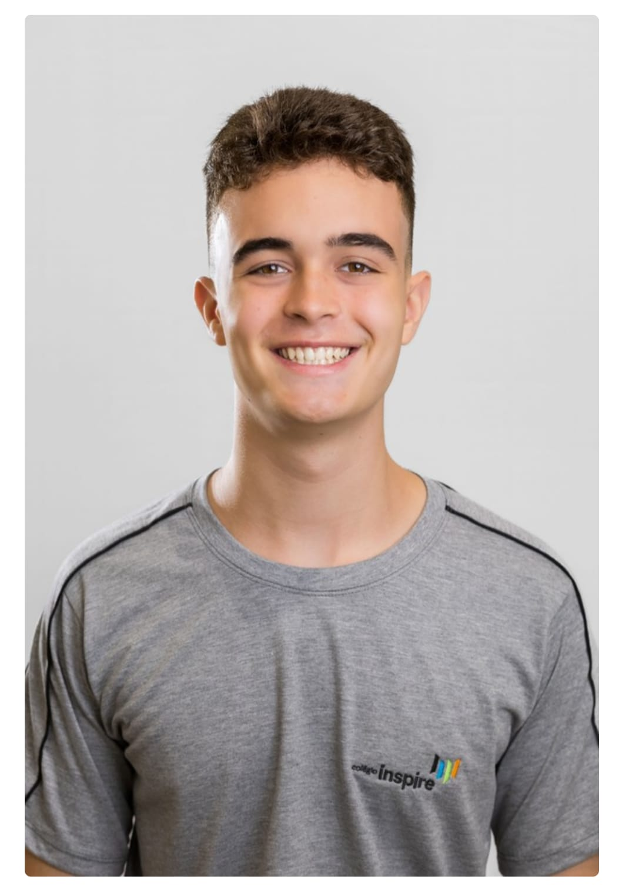

Sobre mim

Sou desenvolvedor e analista de dados, com conhecimento em Python, Java e SQL, aplicados no desenvolvimento de soluções e no tratamento e análise de dados.
Tenho experiência com DAX e Power BI para criar dashboards e relatórios, e também me sinto em casa no Linux. Gosto muito de Virtualização (VMs), Docker e Cloud Computing.
Comecei a programar aos 12 anos, com C++, e depois me aprofundei em Python e Java. Sou proativo e tenho um forte interesse por tecnologia.
Habilidades
As linguagens e ferramentas que eu uso nos meus projetos.
Linguagens de programação
Recursos que conheço
Projetos
Dashboards e projetos que eu criei. Clique para abrir.
Trajetória
Meu caminho até aqui, da escola à faculdade.
Primeiras linhas de código
Comecei a programar com C++ e depois escolhi me aprofundar em Python e Java.
Colégio Inspire
Ensino Médio e Anos Finais.
Fatec, Análise e Desenvolvimento de Sistemas
Projetos em ambiente Linux, com Docker e máquinas virtuais no Oracle VirtualBox. Também criei vários dashboards no Power BI, com DAX, para projetos próprios e para APIs.
Vamos conversar?
Quer falar sobre um projeto, uma vaga ou uma ideia? Escolha o jeito que for melhor para você.